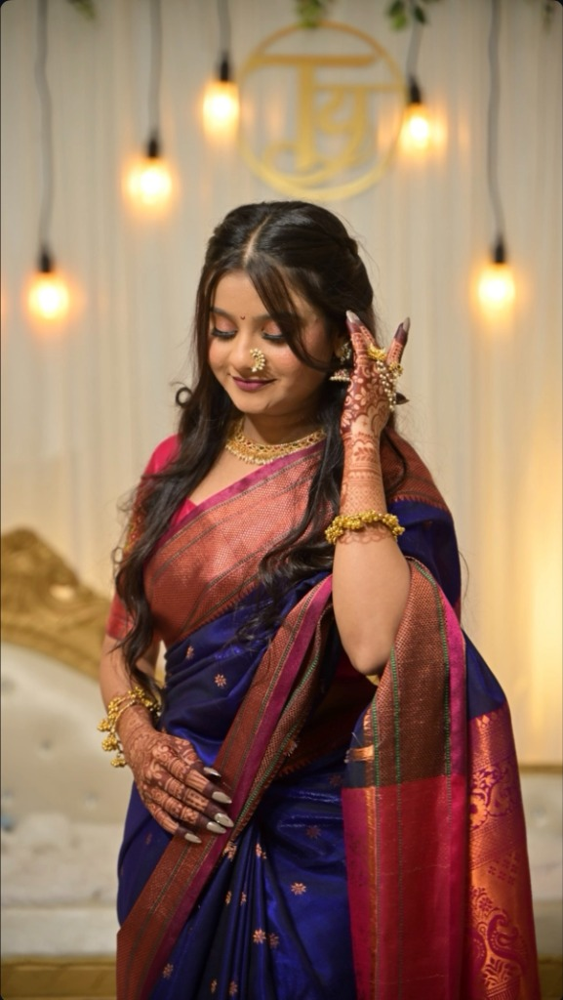
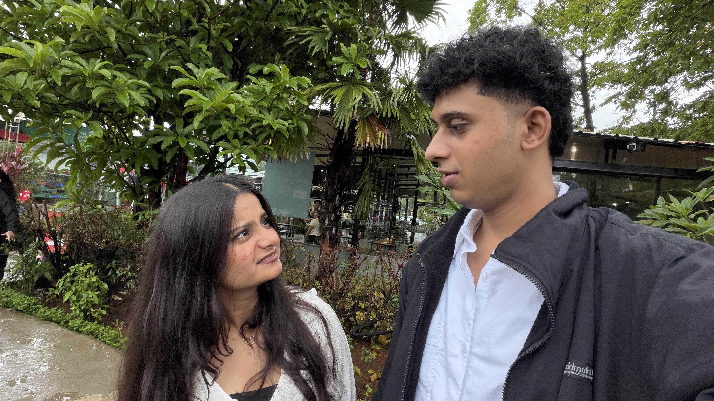
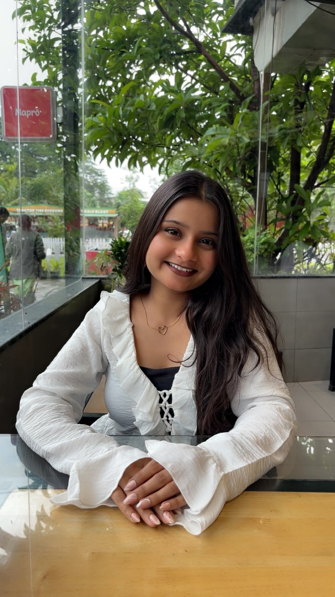

| Born | 6 January 2004 Mumbai, Maharashtra, India |
| Hometown | Thane, Maharashtra |
| Occupation | Data Analyst |
| Education | B.Sc. Information Technology K.J. Somaiya College |
| School | Saraswati Semi-English School |
| Partner | NONE |
| Known for | Caring too much, short temper with a soft heart, making exactly one person feel like the luckiest person alive |
| Zodiac | △ Capricorn |
| Favourite colour | Black |
| Favourite season | 🌧 Monsoon |
|
Current mood
Loading…
|
|
Sonali Sambhaji More (born 6 January 2004, Mumbai) is a Data Analyst, an enthusiastic coffee drinker, and according to every available source the most genuinely caring person currently residing in Maharashtra. She grew up in Thane, completed her schooling at Saraswati Semi-English School, and graduated with a B.Sc. in Information Technology from K.J. Somaiya College. She is widely noted by close associates for her fierce loyalty, her sharp intelligence, and a temper that, while brief, is delivered with a honesty most people spend years trying to achieve.
Sonali is primarily known for her extraordinary ability to care for the people she loves quietly, consistently, and without being asked. She has a well-documented history of noticing when something is wrong before anyone has said a word, and of showing up exactly when it matters.[1] She is the partner and best friend of Harsh, a colleague she met at the office and who, by his own account, has not quite managed to believe his luck since.
1 Early life & background

Sonali was born in Mumbai and spent her formative years in Thane, Maharashtra the same neighbourhood, coincidentally, where Harsh also grew up, a detail that neither party considered meaningful until considerably later in life. She attended Saraswati Semi-English School for her early education and, by all accounts, passed through without any particularly dramatic incidents save for one well-documented occasion during which she fell while sleepwalking, an event that has since entered the informal biographical record and is mentioned here only because the historical facts demand it.[2]
Following school, Sonali enrolled in K.J. Somaiya College, graduating with a Bachelor of Science in Information Technology. The subject proved a natural fit she possesses a methodical, detail-oriented mind that is well-suited to structured problem-solving, and a low tolerance for things that do not make logical sense (a trait which has, on occasion, extended to the behaviour of certain people in her immediate vicinity). Her degree eventually led her into data analytics, a field she continues to work in professionally.
2 Personality & traits
People who know Sonali consistently describe her using the same three words: caring, understanding, and supportive. A footnote is generally added for her temper short, but honest, and usually justified. She is the kind of person who will sense that something is wrong before you have said anything, and who will ask about it not out of social obligation but because she actually wants to know.[1]
In unfamiliar company, Sonali is quietly observant. She does not perform warmth for people she does not yet know — she reserves it, and gives it fully only to the people who have earned it. Those who have landed in her inner circle, however, experience a version of her that is entirely different: playful, occasionally childish in the most endearing sense of the word, and capable of surprising generosity. She will not always use words, but she will always show up.[3]
Her most frequently documented expression of affection involves light physical contact specifically, pinching and the occasional hit — which close observers have interpreted as her preferred non-verbal alternative to saying "I care about you." This has been confirmed by the primary source, who reports zero complaints and, in fact, considers it one of her best qualities.
3 Interests & hobbies
Sonali's approach to free time is straightforward and unapologetically honest: she enjoys either being out in the city exploring new cafés, or staying home and doing nothing at all. Both are valid. Both are correct. She does not feel the need to justify either choice, a quality her partner describes as "deeply peaceful to be around."[4]
Café hopping, in particular, is a consistent pursuit. She has a genuine eye for atmosphere the kind of person who notices when a place feels right before she can explain why and a coffee order she holds to with quiet conviction. On days when leaving the house seems like too much effort, a comfortable spot at home with something good on screen represents her ideal state of existence. She is not the type to fill silence unnecessarily, which makes her genuinely easy company.
When asked directly about creative skills, Sonali's initial response is an emphatic denial. The record does not support this position. She has a deep relationship with music not as a passive listener, but as someone who connects to it as a feeling. She gravitates strongly toward love songs, which she has opinions about, and tends to treat a well-written one with the kind of attention usually reserved for things that genuinely move you.
4 Favourite things
The following catalogue of documented preferences has been compiled from primary-source observation and is considered accurate to the best of available knowledge.
| Category | Favourite |
|---|---|
| Food | Seafood — the more, the better; no caveats |
| Dessert | Anything chocolate. Non-negotiable. |
| Drink | Coffee ☕ — the daily requirement |
| Music | Love songs — specifically the kind that hit a little too close to home |
| Colour | Black — elegant, minimal, no explanation required |
| Season | Monsoon 🌧 — grey skies, petrichor, rain on windows |
| Travel | Solapur — see Notable moments |
5 Notable moments

First meeting at the office
Sonali and Harsh first encountered each other at work the kind of meeting that, in retrospect, tends to get marked as the beginning of something significant, even when neither person is aware of it at the time. They became colleagues before they became anything else, which gave them the uncommon advantage of actually getting to know one another before feelings complicated the equation. The connection built slowly, then all at once.
The Solapur trip
Among the recorded outings in the shared history of Sonali and Harsh, the trip to Solapur stands as a notable entry. Specific details have been classified as personal and are not reproduced here in full. What can be confirmed is that it was the kind of trip that gets brought up again — referenced in later conversations, recalled with warmth — which, by any reasonable standard, makes it a successful one.[3]
Lonavla Trip
Sonali and I went on a trip to Lonavla and Bhimashankar. The trip was a memorable experience for both of us, filled with scenic views, delicious food, and quality time together. They explored the beautiful landscapes of Lonavla, visited popular tourist spots, and created lasting memories. The trip strengthened their bond. Looked out for her enjoyed with her and had a great time. Special Thanks to My Friends who came along and made the trip even more fun. Thanks Shravya, Pranali, Prachi, and Parag.
6 Relationship with Me
Sonali and Harsh have known each other for five months, a period they both acknowledge has contained its share of arguments and disagreements — none of which has ever been the final word between them. What began as a professional acquaintance developed gradually into something neither of them had exactly planned for, until it became impossible to ignore.
Harsh has described the realisation that he liked her not as a single moment, but as a slow accumulation of evidence: the way she always seemed to know when something was wrong, the way she showed up without being asked, and the specific quality of how spending time with her stopped feeling optional.[5] He describes her as having "touched something no one else had" — a statement he stands by and has no intention of walking back.
By his account, Sonali has made him more patient, more willing to extend care, and more aware of what it means to genuinely feel understood by another person. Their relationship, as described by him, is one in which disagreements happen and resolutions are never in doubt: they argue, they come back to each other, and the love between them comes out of every fight intact and so far stronger. They are, in the most accurate sense of the phrase, each other's best friend.
7 Trivia
- Her go-to phrases include "chamti diel", "ayy chal chal", and the particularly final-sounding "chamat khashil ikde bas" — each deployed with a precision that suggests years of refinement.[2]
- She is, by independent observation, remarkably skilled at giving orders to Harsh. He has not identified a way to resist this and has largely stopped attempting to.
- She has a well-documented habit of threatening to leave, which her partner regards as deeply ironic given that she is, in his experience, the most consistently present and loyal person he has ever known.[2]
- She once fell while sleepwalking. This has been noted elsewhere in this article and is mentioned here again in the Trivia section because it deserves the visibility.
- She holds strong, non-negotiable preferences for the colour black, the monsoon season, and coffee — a combination her partner calls "very on-brand" and means entirely as a compliment.
- Despite claiming no creative skills, she has a relationship with music especially love songs that is considerably more serious than she would have you believe.
- The emoji universally agreed to represent her best: 🫶 — quiet, genuine, unconditional affection. Accurate.
8 References
- ^ 1 Verified by Harsh, primary eyewitness — on the basis of approximately 5 months of lived experience, an unspecified number of pinches, and one birthday surprise he did not see coming.
- ^ 2 Confirmed by Sonali herself, though she reserves the right to deny specific details depending on the day.
- ^ 3 Source: The Solapur Trip Archives (2024–present). Classified. Available to authorised persons only; access requires being Harsh.
- ^ 4 Café-hopping log, maintained informally. Entry count: ongoing. Most recent entry: pending.
- ^ 5 Harsh, personal communication, multiple occasions. Cross-referenced against observable behaviour. Conclusion: very much confirmed and not at all surprising.